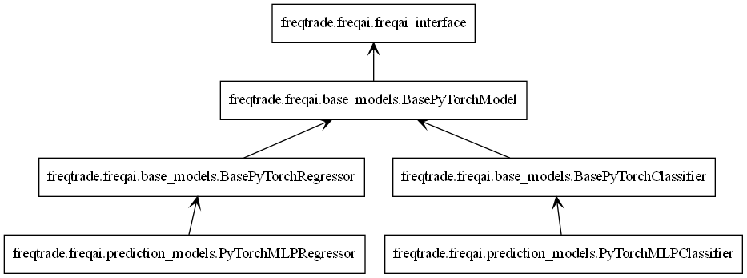

配置¶
FreqAI 通过标准的 Freqtrade 配置文件 和常规的 Freqtrade 策略 进行配置。FreqAI 配置文件和策略文件的示例可分别在 config_examples/config_freqai.example.json 和 freqtrade/templates/FreqaiExampleStrategy.py 中找到。
配置文件设置¶
尽管如参数表中强调的，有大量额外参数可供选择，但 FreqAI 配置至少必须包含以下参数（参数值仅为示例）：
"freqai": {
"enabled": true,
"purge_old_models": 2,
"train_period_days": 30,
"backtest_period_days": 7,
"identifier" : "unique-id",
"feature_parameters" : {
"include_timeframes": ["5m","15m","4h"],
"include_corr_pairlist": [
"ETH/USD",
"LINK/USD",
"BNB/USD"
],
"label_period_candles": 24,
"include_shifted_candles": 2,
"indicator_periods_candles": [10, 20]
},
"data_split_parameters" : {
"test_size": 0.25
}
}
完整配置示例可在 config_examples/config_freqai.example.json 中获取。
Note
新手常会忽略 identifier，但该值在配置中起着重要作用。这是您选择用于描述某次运行的唯一 ID。保持其不变可使您维持故障恢复能力以及更快的回测速度。当您想尝试新运行（新特征、新模型等）时，应更改此值（或删除 user_data/models/unique-id 文件夹）。更多细节详见参数表。
构建 FreqAI 策略¶
FreqAI 策略要求在标准 Freqtrade 策略 中包含以下代码行：
# user should define the maximum startup candle count (the largest number of candles
# passed to any single indicator)
startup_candle_count: int = 20
def populate_indicators(self, dataframe: DataFrame, metadata: dict) -> DataFrame:
# the model will return all labels created by user in `set_freqai_targets()`
# (& appended targets), an indication of whether or not the prediction should be accepted,
# the target mean/std values for each of the labels created by user in
# `set_freqai_targets()` for each training period.
dataframe = self.freqai.start(dataframe, metadata, self)
return dataframe
def feature_engineering_expand_all(self, dataframe: DataFrame, period, **kwargs) -> DataFrame:
"""
*Only functional with FreqAI enabled strategies*
This function will automatically expand the defined features on the config defined
`indicator_periods_candles`, `include_timeframes`, `include_shifted_candles`, and
`include_corr_pairs`. In other words, a single feature defined in this function
will automatically expand to a total of
`indicator_periods_candles` * `include_timeframes` * `include_shifted_candles` *
`include_corr_pairs` numbers of features added to the model.
All features must be prepended with `%` to be recognized by FreqAI internals.
:param df: strategy dataframe which will receive the features
:param period: period of the indicator - usage example:
dataframe["%-ema-period"] = ta.EMA(dataframe, timeperiod=period)
"""
dataframe["%-rsi-period"] = ta.RSI(dataframe, timeperiod=period)
dataframe["%-mfi-period"] = ta.MFI(dataframe, timeperiod=period)
dataframe["%-adx-period"] = ta.ADX(dataframe, timeperiod=period)
dataframe["%-sma-period"] = ta.SMA(dataframe, timeperiod=period)
dataframe["%-ema-period"] = ta.EMA(dataframe, timeperiod=period)
return dataframe
def feature_engineering_expand_basic(self, dataframe: DataFrame, **kwargs) -> DataFrame:
"""
*Only functional with FreqAI enabled strategies*
This function will automatically expand the defined features on the config defined
`include_timeframes`, `include_shifted_candles`, and `include_corr_pairs`.
In other words, a single feature defined in this function
will automatically expand to a total of
`include_timeframes` * `include_shifted_candles` * `include_corr_pairs`
numbers of features added to the model.
Features defined here will *not* be automatically duplicated on user defined
`indicator_periods_candles`
All features must be prepended with `%` to be recognized by FreqAI internals.
:param df: strategy dataframe which will receive the features
dataframe["%-pct-change"] = dataframe["close"].pct_change()
dataframe["%-ema-200"] = ta.EMA(dataframe, timeperiod=200)
"""
dataframe["%-pct-change"] = dataframe["close"].pct_change()
dataframe["%-raw_volume"] = dataframe["volume"]
dataframe["%-raw_price"] = dataframe["close"]
return dataframe
def feature_engineering_standard(self, dataframe: DataFrame, **kwargs) -> DataFrame:
"""
*Only functional with FreqAI enabled strategies*
This optional function will be called once with the dataframe of the base timeframe.
This is the final function to be called, which means that the dataframe entering this
function will contain all the features and columns created by all other
freqai_feature_engineering_* functions.
This function is a good place to do custom exotic feature extractions (e.g. tsfresh).
This function is a good place for any feature that should not be auto-expanded upon
(e.g. day of the week).
All features must be prepended with `%` to be recognized by FreqAI internals.
:param df: strategy dataframe which will receive the features
usage example: dataframe["%-day_of_week"] = (dataframe["date"].dt.dayofweek + 1) / 7
"""
dataframe["%-day_of_week"] = (dataframe["date"].dt.dayofweek + 1) / 7
dataframe["%-hour_of_day"] = (dataframe["date"].dt.hour + 1) / 25
return dataframe
def set_freqai_targets(self, dataframe: DataFrame, **kwargs) -> DataFrame:
"""
*Only functional with FreqAI enabled strategies*
Required function to set the targets for the model.
All targets must be prepended with `&` to be recognized by the FreqAI internals.
:param df: strategy dataframe which will receive the targets
usage example: dataframe["&-target"] = dataframe["close"].shift(-1) / dataframe["close"]
"""
dataframe["&-s_close"] = (
dataframe["close"]
.shift(-self.freqai_info["feature_parameters"]["label_period_candles"])
.rolling(self.freqai_info["feature_parameters"]["label_period_candles"])
.mean()
/ dataframe["close"]
- 1
)
return dataframe
请注意，feature_engineering_*() 是添加特征的地方，而 set_freqai_targets() 则添加标签/目标。完整示例策略可在 templates/FreqaiExampleStrategy.py 中找到。
Note
self.freqai.start() 函数不能在 populate_indicators() 之外调用。
Note
特征必须在 feature_engineering_*() 中定义。在 populate_indicators() 中定义 FreqAI 特征将导致算法在实盘/模拟模式下失败。若要添加与特定交易对或时间框架无关的通用特征，应使用 feature_engineering_standard()
（如 freqtrade/templates/FreqaiExampleStrategy.py 中的示例所示）。
重要数据框键模式¶
以下是典型策略数据框（df[]）中可包含/使用的值：
| DataFrame 键 | 描述 |
|---|---|
df['&*'] |
在 set_freqai_targets() 中以 & 开头的任何 dataframe 列在 FreqAI 内部被视为训练目标（标签）（通常遵循命名约定 &-s*）。例如，要预测未来 40 根 K 线的收盘价，您需要设置 df['&-s_close'] = df['close'].shift(-self.freqai_info["feature_parameters"]["label_period_candles"])，并在配置中设置 "label_period_candles": 40。FreqAI 进行预测并将预测结果以相同的键（df['&-s_close']）返回，以便在 populate_entry/exit_trend() 中使用。数据类型： 取决于模型的输出。 |
df['&*_std/mean'] |
训练期间（或使用 fit_live_predictions_candles 进行实时跟踪）定义的标签的标准差和平均值。通常用于理解预测的稀有性（使用 templates/FreqaiExampleStrategy.py 中所示的 z 分数以及此处的解释来评估特定预测在训练期间或使用 fit_live_predictions_candles 进行历史跟踪时出现的频率）。数据类型： 浮点数。 |
df['do_predict'] |
异常数据点的指示。返回值是介于 -2 和 2 之间的整数，让您知道预测是否可信。do_predict==1 表示预测可信。如果输入数据点的相异性指数（DI，详见此处）超过配置中定义的阈值，FreqAI 将从 do_predict 中减去 1，导致 do_predict==0。如果 use_SVM_to_remove_outliers 处于活动状态，支持向量机（SVM，详见此处）也可能在训练和预测数据中检测到异常值。在这种情况下，SVM 也会从 do_predict 中减去 1。如果输入数据点被 SVM 视为异常值但未被 DI 视为异常值，或者反之，结果将是 do_predict==0。如果 DI 和 SVM 都认为输入数据点是异常值，结果将是 do_predict==-1。与 SVM 类似，如果 use_DBSCAN_to_remove_outliers 处于活动状态，DBSCAN（详见此处）也可能检测到异常值并从 do_predict 中减去 1。因此，如果 SVM 和 DBSCAN 都处于活动状态，并且将一个超过 DI 阈值的数据点识别为异常值，结果将是 do_predict==-2。一个特殊情况是当 do_predict == 2 时，这意味着模型因超过 expired_hours 而已过期。数据类型： 介于 -2 和 2 之间的整数。 |
df['DI_values'] |
相异性指数（DI）值是 FreqAI 对预测置信水平的代理指标。较低的 DI 意味着预测接近训练数据，即预测置信度较高。有关 DI 的详细信息请参见此处。 数据类型： 浮点数。 |
df['%*'] |
在 feature_engineering_*() 中以 % 开头的任何 dataframe 列被视为训练特征。例如，您可以通过设置 df['%-rsi'] 将 RSI 包含在训练特征集中（类似于 templates/FreqaiExampleStrategy.py 中的做法）。有关如何实现这一点的更多详细信息，请参见此处。注意： 由于以 % 开头的特征数量可能非常快速地倍增（例如，使用 include_shifted_candles 和 include_timeframes 的乘法功能，如参数表中所述，很容易构建出数万个特征），这些特征会从 FreqAI 返回到策略的 dataframe 中移除。为了保留特定类型的特征用于绘图目的，您需要在其前面加上 %%（详见下文）。数据类型： 取决于用户创建的特征。 |
df['%%*'] |
在 feature_engineering_*() 中以 %% 开头的任何 dataframe 列被视为训练特征，与上述的 % 前缀完全相同。然而，在这种情况下，这些特征会被返回给策略，用于 FreqUI/绘图-dataframe 绘图以及在模拟/实盘/回测中进行监控。数据类型： 取决于用户创建的特征。请注意，在 feature_engineering_expand() 中创建的特征将具有自动的 FreqAI 命名模式，具体取决于您配置的扩展（即 include_timeframes、include_corr_pairlist、indicators_periods_candles、include_shifted_candles）。因此，如果您想从 feature_engineering_expand_all() 中绘制 %%-rsi，您的绘图配置的最终命名模式将是：%%-rsi-period_10_ETH/USDT:USDT_1h，对应 period=10、timeframe=1h 和 pair=ETH/USDT:USDT 的 rsi 特征（如果您使用期货交易对，则会添加 :USDT）。在 self.freqai.start() 之后，在您的 populate_indicators() 中添加 print(dataframe.columns) 来查看返回给策略用于绘图目的的全部可用特征列表是很有用的。 |
设置 startup_candle_count¶
FreqAI 策略中的 startup_candle_count 需要以与标准 Freqtrade 策略相同的方式进行设置（详见此处）。Freqtrade 使用此值来确保在调用 dataprovider 时提供足够的数据量，以避免首次训练开始时出现任何 NaN 值。您可以通过识别传递给指标创建函数（例如 TA-Lib 函数）的最长周期（以蜡烛单位）来轻松设置此值。在给出的示例中，startup_candle_count 为 20，因为这是 indicators_periods_candles 中的最大值。
Note
在某些情况下，TA-Lib 函数实际需要的数据量可能超过传入的 period 值，否则特征数据集中会填充 NaN 值。经验表明，将 startup_candle_count 乘以 2 总能得到完全无 NaN 的训练数据集。因此，最安全的做法通常是将预期的 startup_candle_count 乘以 2。请注意查看以下日志信息以确认数据清洗完成：
2022-08-31 15:14:04 - freqtrade.freqai.data_kitchen - INFO - dropped 0 training points due to NaNs in populated dataset 4319.
创建动态目标阈值¶
决定何时进入或退出交易可以采用动态方式，以反映当前市场状况。FreqAI 允许您从模型训练中返回额外信息（更多信息请参见此处）。例如，&*_std/mean 返回值描述了最近一次训练期间目标/标签的统计分布。将给定预测值与这些值进行比较，可以了解预测的稀有性。在 templates/FreqaiExampleStrategy.py 中，target_roi 和 sell_roi 被定义为距离均值 1.25 个标准差，这会导致更接近均值的预测被过滤掉。
dataframe["target_roi"] = dataframe["&-s_close_mean"] + dataframe["&-s_close_std"] * 1.25
dataframe["sell_roi"] = dataframe["&-s_close_mean"] - dataframe["&-s_close_std"] * 1.25
若希望基于历史预测的总体数据来创建动态目标，而非使用上述训练信息，您需要在配置中将 fit_live_predictions_candles 设置为要用于生成目标统计的历史预测蜡烛数量。
"freqai": {
"fit_live_predictions_candles": 300,
}
如果设置了该值，FreqAI 将首先使用训练数据中的预测，随后逐步引入实时生成的预测数据。如果您停止并重启具有相同 identifier 的模型，FreqAI 会保存这些历史数据以便重新加载。
使用不同的预测模型¶
FreqAI 提供了多个示例预测模型库，可通过 --freqaimodel 标志直接使用。这些库包括 CatBoost、LightGBM 和 XGBoost 的回归、分类及多目标模型，可在 freqai/prediction_models/ 目录中找到。
回归模型与分类模型的区别在于预测的目标类型：回归模型预测连续值目标，例如比特币明天的价格；而分类模型预测离散值目标，例如判断比特币价格明天是否会上涨。这意味着您需要根据所用模型类型以不同方式指定目标（详见下文）。
上述所有模型库均采用梯度提升决策树算法。它们基于集成学习原理，通过组合多个简单学习器的预测结果，获得更稳定且泛化能力更强的最终预测。这里的简单学习器即决策树。梯度提升是指一种序列化学习方式，每个后续学习器用于改进前一个学习器的误差。若需深入了解不同模型库，可查阅其官方文档：
- CatBoost: https://catboost.ai/en/docs/
- LightGBM: https://lightgbm.readthedocs.io/en/v3.3.2/#
- XGBoost: https://xgboost.readthedocs.io/en/stable/#
此外，还有大量在线文章描述和比较这些算法。一些相对轻量级的例子包括 CatBoost vs. LightGBM vs. XGBoost — Which is the best algorithm? 和 XGBoost, LightGBM or CatBoost — which boosting algorithm should I use?。请注意，每个模型的性能高度依赖于具体应用，因此任何报告的指标可能并不适用于您的特定使用场景。
除了 FreqAI 中已有的模型外，还可以使用 IFreqaiModel 类来自定义和创建您自己的预测模型。建议您继承 fit()、train() 和 predict() 方法来自定义训练过程的各个方面。您可以将自定义的 FreqAI 模型放置在 user_data/freqaimodels 目录中 - freqtrade 将根据提供的 --freqaimodel 名称从那里加载它们 - 该名称必须与您的自定义模型类名相对应。
请确保使用唯一的名称，以避免覆盖内置模型。
设置模型目标¶
回归器¶
如果使用回归器，需要指定具有连续值的目标变量。FreqAI 包含多种回归器，例如通过标志 --freqaimodel CatboostRegressor 使用的 CatboostRegressor。设置回归目标预测未来100根K线价格的示例如下：
df['&s-close_price'] = df['close'].shift(-100)
如需预测多个目标变量，需使用与上述相同的语法定义多个标签。
分类器¶
如果使用分类器，需要指定具有离散值的目标变量。FreqAI 包含多种分类器，例如通过标志 --freqaimodel CatboostClassifier 使用的 CatboostClassifier。若选择使用分类器，需使用字符串设置类别标签。例如，要预测未来100根K线价格涨跌情况，可设置：
df['&s-up_or_down'] = np.where( df["close"].shift(-100) > df["close"], 'up', 'down')
如需预测多个目标变量，必须在同一标签列中指定所有标签。例如，可通过设置 same 标签来定义价格未发生变化的区间：
df['&s-up_or_down'] = np.where( df["close"].shift(-100) > df["close"], 'up', 'down')
df['&s-up_or_down'] = np.where( df["close"].shift(-100) == df["close"], 'same', df['&s-up_or_down'])
PyTorch 模块¶
快速开始¶
运行 PyTorch 模型最快捷的方式是使用以下命令（适用于回归任务）：
freqtrade trade --config config_examples/config_freqai.example.json --strategy FreqaiExampleStrategy --freqaimodel PyTorchMLPRegressor --strategy-path freqtrade/templates
Installation/docker
PyTorch 模块需要安装 torch 等大型软件包，用户必须在运行 ./setup.sh -i 时对提示问题 "Do you also want dependencies for freqai-rl or PyTorch (~700mb additional space required) [y/N]?" 回答 "y" 来显式请求安装。
偏好使用 docker 的用户应确保使用带有 _freqaitorch 后缀的 docker 镜像。
我们在 docker/docker-compose-freqai.yml 中专门提供了对应的 docker-compose 文件 - 可通过 docker compose -f docker/docker-compose-freqai.yml run ... 命令使用 - 或可复制该文件来替换原始 docker 文件。
此 docker-compose 文件还包含一个（默认禁用的）配置段，用于在 docker 容器内启用 GPU 资源。这显然要求系统本身具备可用的 GPU 资源。
PyTorch dropped support for macOS x64 (intel based Apple devices) in version 2.3. Subsequently, freqtrade also dropped support for PyTorch on this platform.
结构¶
模型¶
您可以在 PyTorch 中构建自己的神经网络架构，只需在自定义的 IFreqaiModel 文件 内定义 nn.Module 类，然后在 def train() 函数中使用该类。以下是一个使用 PyTorch 实现逻辑回归模型（应与 nn.BCELoss 准则配合使用）用于分类任务的示例。
class LogisticRegression(nn.Module):
def __init__(self, input_size: int):
super().__init__()
# Define your layers
self.linear = nn.Linear(input_size, 1)
self.activation = nn.Sigmoid()
def forward(self, x: torch.Tensor) -> torch.Tensor:
# Define the forward pass
out = self.linear(x)
out = self.activation(out)
return out
class MyCoolPyTorchClassifier(BasePyTorchClassifier):
"""
This is a custom IFreqaiModel showing how a user might setup their own
custom Neural Network architecture for their training.
"""
@property
def data_convertor(self) -> PyTorchDataConvertor:
return DefaultPyTorchDataConvertor(target_tensor_type=torch.float)
def __init__(self, **kwargs) -> None:
super().__init__(**kwargs)
config = self.freqai_info.get("model_training_parameters", {})
self.learning_rate: float = config.get("learning_rate", 3e-4)
self.model_kwargs: dict[str, Any] = config.get("model_kwargs", {})
self.trainer_kwargs: dict[str, Any] = config.get("trainer_kwargs", {})
def fit(self, data_dictionary: dict, dk: FreqaiDataKitchen, **kwargs) -> Any:
"""
User sets up the training and test data to fit their desired model here
:param data_dictionary: the dictionary holding all data for train, test,
labels, weights
:param dk: The datakitchen object for the current coin/model
"""
class_names = self.get_class_names()
self.convert_label_column_to_int(data_dictionary, dk, class_names)
n_features = data_dictionary["train_features"].shape[-1]
model = LogisticRegression(
input_dim=n_features
)
model.to(self.device)
optimizer = torch.optim.AdamW(model.parameters(), lr=self.learning_rate)
criterion = torch.nn.CrossEntropyLoss()
init_model = self.get_init_model(dk.pair)
trainer = PyTorchModelTrainer(
model=model,
optimizer=optimizer,
criterion=criterion,
model_meta_data={"class_names": class_names},
device=self.device,
init_model=init_model,
data_convertor=self.data_convertor,
**self.trainer_kwargs,
)
trainer.fit(data_dictionary, self.splits)
return trainer
训练器¶
PyTorchModelTrainer 执行符合 PyTorch 惯例的训练循环：
定义我们的模型、损失函数和优化器，然后将它们移动到适当的设备（GPU 或 CPU）。在循环内部，我们遍历数据加载器中的批次，将数据移动到设备，计算预测和损失，反向传播，并使用优化器更新模型参数。
此外，训练器还负责以下任务：
- 保存和加载模型
- 将数据从
pandas.DataFrame转换为torch.Tensor。
与 Freqai 模块的集成¶
与所有 freqai 模型一样，PyTorch 模型继承自 IFreqaiModel。IFreqaiModel 声明了三个抽象方法：train、fit 和 predict。我们在三个层次结构中实现这些方法。
从上到下：
BasePyTorchModel- 实现train方法。所有BasePyTorch*类都继承它。负责通用数据准备（例如，数据标准化）并调用fit方法。设置子类使用的device属性。设置父类使用的model_type属性。BasePyTorch*- 实现predict方法。这里的*代表一组算法，例如分类器或回归器。负责数据预处理、预测以及必要的后处理。PyTorch*Classifier/PyTorch*Regressor- 实现fit方法。负责主要的训练流程，在此我们初始化训练器和模型对象。

完整示例¶
使用 MLP（多层感知机）模型、MSELoss 损失函数和 AdamW 优化器构建 PyTorch 回归器。
class PyTorchMLPRegressor(BasePyTorchRegressor):
def __init__(self, **kwargs) -> None:
super().__init__(**kwargs)
config = self.freqai_info.get("model_training_parameters", {})
self.learning_rate: float = config.get("learning_rate", 3e-4)
self.model_kwargs: dict[str, Any] = config.get("model_kwargs", {})
self.trainer_kwargs: dict[str, Any] = config.get("trainer_kwargs", {})
def fit(self, data_dictionary: dict, dk: FreqaiDataKitchen, **kwargs) -> Any:
n_features = data_dictionary["train_features"].shape[-1]
model = PyTorchMLPModel(
input_dim=n_features,
output_dim=1,
**self.model_kwargs
)
model.to(self.device)
optimizer = torch.optim.AdamW(model.parameters(), lr=self.learning_rate)
criterion = torch.nn.MSELoss()
init_model = self.get_init_model(dk.pair)
trainer = PyTorchModelTrainer(
model=model,
optimizer=optimizer,
criterion=criterion,
device=self.device,
init_model=init_model,
target_tensor_type=torch.float,
**self.trainer_kwargs,
)
trainer.fit(data_dictionary)
return trainer
这里我们创建一个实现了 fit 方法的 PyTorchMLPRegressor 类。fit 方法指定了训练构建模块：模型、优化器、损失函数和训练器。我们同时继承了 BasePyTorchRegressor 和 BasePyTorchModel，前者实现了适用于回归任务的 predict 方法，后者实现了训练方法。
分类器的类别名称设置
使用分类器时，用户必须通过重写 IFreqaiModel.class_names 属性来声明类别名称（或目标）。这可以通过在 FreqAI 策略的 set_freqai_targets 方法中设置 self.freqai.class_names 来实现。
For example, if you are using a binary classifier to predict price movements as up or down, you can set the class names as follows:
def set_freqai_targets(self, dataframe: DataFrame, metadata: dict, **kwargs) -> DataFrame:
self.freqai.class_names = ["down", "up"]
dataframe['&s-up_or_down'] = np.where(dataframe["close"].shift(-100) >
dataframe["close"], 'up', 'down')
return dataframe
使用 torch.compile() 提升性能¶
Torch 提供了 torch.compile() 方法，可用于提升特定 GPU 硬件的性能。更多详细信息请参阅此处。简而言之，您只需将 model 包装在 torch.compile() 中：
model = PyTorchMLPModel(
input_dim=n_features,
output_dim=1,
**self.model_kwargs
)
model.to(self.device)
model = torch.compile(model)
然后照常使用模型。请注意，这样做将移除即时执行模式，这意味着错误信息和堆栈跟踪将不再具有参考价值。